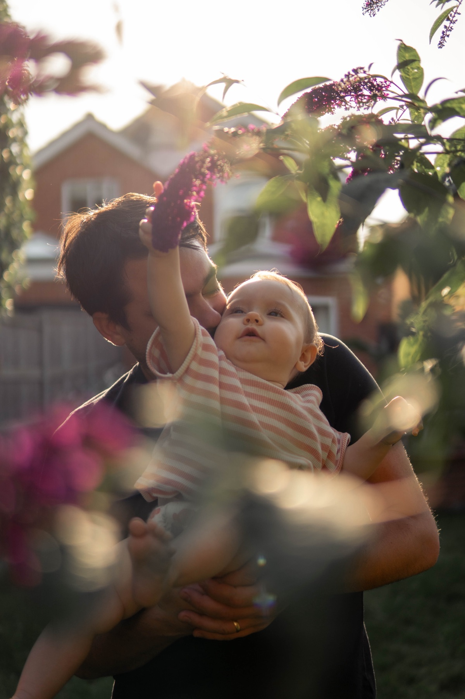
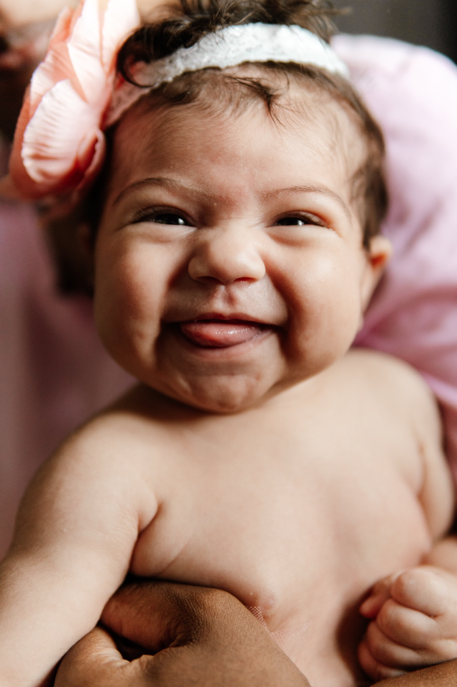
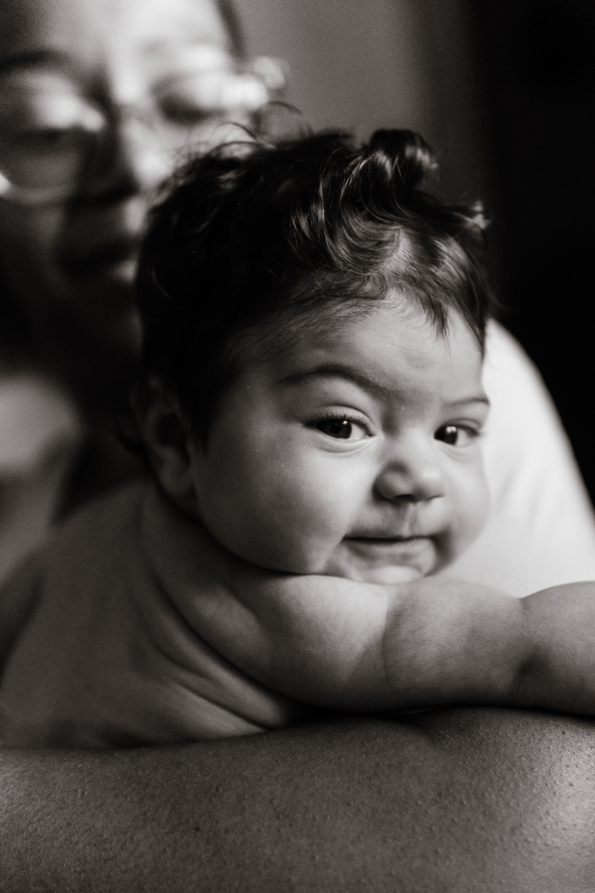

Your Newborn
Session
A little guide to the weeks ahead
Welcome.
Thank you for trusting me with these first few weeks. I'm a mum myself, so I remember this stage. The exhaustion, the staring, the sense it's all going too fast to hold onto. It's a blur of a time and a precious one, and I don't take it lightly.
This guide covers everything you need: what to expect, what to have ready, and what happens once your photographs arrive. Read it whenever you get five quiet minutes, which I know are rare right now.
Anything I haven't covered, just ask.
Cam x

Four steps to your session.
Fill in your quick client questionnaire. It helps me get to know you and your family and what matters most to you, so we can tailor the session entirely around your world.
When your little one makes their arrival, send me a quick text or email whenever you are settled. We will lock in your exact session date.
The first three to four weeks are lovely, but there's no cliff edge. Newborns are sleepiest and curliest in the first two weeks; older babies are more alert and give you different photographs, equally worth having.
Sit back, sip a hot coffee (or tea!), and take a breath. There's no pressure, no strict timeline, and no forced smiles; just a calm, gentle morning capturing your new rhythm together.
Within two weeks of your shoot, your private online gallery will arrive in your inbox, ready for you to cosy up and swoon over your pictures.

All you have to do is be together.
This is the part I most want you to hear, so I've put it near the front: on the day, there is nothing to perform and nothing to get right.
- Carry on as you would. Feed, change, sway, sit. That is the session.
- If the baby cries, that's not a problem to fix. The session is completely baby-led and there is no rush to have them settled and carry on.
- You can pause, stop, or take a breather any time. Just say.
- You don't need to host me or make conversation. Chatting is welcome, but so is quiet.
- If it's simply not the day, or someone's poorly, message me and we'll move it. Newborn weeks are unpredictable, and I plan around that, not against it.
That's genuinely it. Everything else in this guide is just helpful detail, none of it matters more than you being relaxed and together.
I block out 3 full hours for our time together, so you never have to feel rushed or stressed. We move entirely at your baby's pace.

Feeling relaxed on the day.
Even when you know there is no pressure, it is normal to feel a little tense beforehand. A few things that genuinely help:
- The hour before, keep it simple. A feed if it fits, a hot drink, and don't try to have everything perfect.
- The first ten minutes might feel a bit awkward. It passes, usually the moment the baby does something and you forget I'm there.
- Put on a playlist you love. Music works magic to soften quiet moments and help everyone relax.
- You don't have to look at me. Almost every frame you will treasure is you looking at your baby, not the camera.
- Let me carry the “what do I do.” I will gently guide you through it so you never have to wonder.
This might feel like a tender time if you are not feeling quite like yourself yet, still healing, still adjusting. I will photograph you kindly and gently guide you. And if there's anything you'd rather I was mindful of, tell me, and I will quietly work around it.
The little details, kept comfortable.
Little ones are comfiest when they're warm, especially when they're less dressed for those sweet skin-and-detail shots. Turn the thermostat up before I arrive.
Feed whenever the baby needs it, it's never an interruption. If you'd like feeding photographs, breast or bottle, just say, and we will catch them naturally.
If they're unsettled, we pause and start again when everyone is ready. Nothing about this session runs to a schedule.
Soft, plain, and like yourself.
Please don't overthink this. The short version: soft, plain, comfortable. Anything you would genuinely relax and feel good in.
Stick to neutrals. Soft tones keep the focus on your connection. Avoid big logos, slogans, busy prints, or bright tones, which bounce unwanted colour onto skin.
Simple is best: a plain ribbed bodysuit, a soft sleeper, or just a nappy and a lovely swaddle.
Keep these to one calm colour too, so nothing competes with the two of you.
I'm building a small client wardrobe of simple, lovely pieces for mums and babies. If you'd like to borrow something, just message me — and if you'd like fuller wardrobe notes for everyone in the family, ask and I'll send them over.
Lay out what everyone's wearing the night before, alongside the blanket or muslin you'd like in the photographs. And don't feel limited to one look — I'm happy for outfit changes during our time together.
All we really need is a window.
Honestly, all we need for a session at home is a window. Seriously, that's it!
We'll use the cosy, bright spots, usually the nursery, bedroom or living room near big windows. When I arrive I will do a quick walk-through to find where the light is working; don't worry about blinds or furniture, I'll handle that.
And please don't clean for me. Just clear the everyday clutter from around the window, and don't worry about the rest. Real and lived-in is what makes these photographs feel like yours.
Both are very welcome.
They are usually at their best in the first twenty minutes, so we will capture their moments early and let them go play. Have snacks and a comfort item nearby, and please don't force smiles. A reluctant cuddle is a real part of this story.
If the dog is part of the family, the dog is part of the photographs.
Your photographs, hand-edited.
Within two weeks, a private online gallery will land in your inbox. Every image is hand-edited by me, so you get a beautiful, consistent set of photographs.
Your session includes your favourite 5 digital images, chosen by you. You will see the full gallery before you decide. If you fall in love with more, upgrading is simple and completely pressure-free.
You can order professionally printed, colour-managed prints directly from your gallery. For heirloom pieces such as albums, I design and assemble these personally. If you'd like to see options, just let me know when your gallery arrives.
A few things you might be wondering.
No. No props, baskets, or posing baby into artificial shapes. My work is about your first weeks at home as they actually are.
I keep props to a minimum so the focus stays entirely on the real, quiet connection between you and your baby. But if you have a special heirloom, hand-knit blanket, or meaningful keepsake you'd like included, bring it along, and we will naturally weave it in so it feels completely authentic to your home and family.
Absolutely! Those frames are often deeply special. To keep the session calm and unhurried, I invite grandparents to pop in for about 30 minutes at the beginning or end. Just let me know in advance.
I'd love you to. All I ask is that you skip Instagram filters or heavy cropping so the custom edits stay consistent. A tag is always appreciated, but never required.
Tell me, and we'll shape everything around your comfort.
Your gallery stays live for 3 months, and you can order additional images or prints at any point during that window.

I can't wait to meet you all. Any questions at all before the day, just say the word.
Cam x